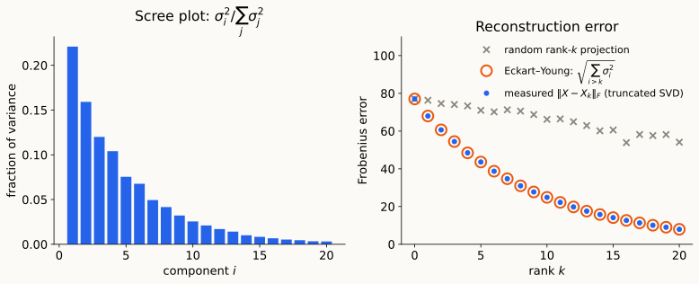
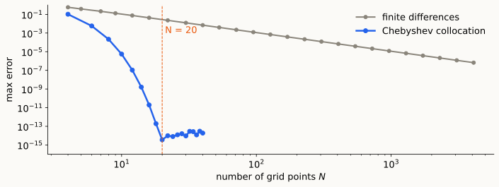

A tour of spectral methods
Spectral methods are a powerful tool for understanding complex systems by studying the eigenvalues and eigenvectors of associated linear operators. Because their theory generalizes from finite-dimensional linear algebra to infinite-dimensional settings, they provide a unifying framework for the analysis and computation of a wide range of problems.
Definition: An eigenvector of a matrix \(A\) is a nonzero vector \(\mathbf{v}\) such that
\[ A \mathbf{v} = \lambda \mathbf{v} \] for some scalar \(\lambda\), called the eigenvalue corresponding to \(\mathbf{v}\).
Spectral Decomposition: A matrix \(A\) is diagonalizable if it can be written as
\[ A = V \Lambda V^{-1}, \] where the columns of \(V\) are the eigenvectors of \(A\) and \(\Lambda\) is a diagonal matrix containing the corresponding eigenvalues.
NB1: Not all matrices are diagonalizable. In such cases, we may need to consider generalized eigenvectors and the Jordan canonical form.
NB2: When \(A\) is symmetric, it is always diagonalizable with an orthonormal set of eigenvectors.
Variational Interpretation:Eigenvectors and eigenvalues are solutions of optimization problems:
\[ \lambda_{\max}(A) = \max_{\mathbf{v} \neq 0} \frac{\mathbf{v}^\top A \mathbf{v}}{\mathbf{v}^\top \mathbf{v}} \]
This can be generalized to other eigenvalues and their corresponding eigenvectors (see the Courant-Fischer min-max theorem in review notes).
Geometric Interpretation: Eigenvectors indicate directions in which the linear transformation associated with the matrix acts by simply scaling, and the corresponding eigenvalues indicate the scaling factor.
For a symmetric matrix \(A\): \[ A = Q \Lambda Q^\top = \sum_{i=1}^n \lambda_i \mathbf{q}_i \mathbf{q}_i^\top, \] a weighted sum of projections onto the eigenvectors.
Variational Interpretation:Eigenvectors and eigenvalues are solutions of optimization problems.
Geometric Interpretation: Eigenvectors indicate directions in which the linear transformation associated with the matrix acts by simply scaling, and the corresponding eigenvalues indicate the scaling factor.
Algebraic Interpretation: Eigenvectors and eigenvalues provide a way to understand the structure of a matrix through its diagonalization, revealing invariant subspaces and simplifying matrix computations.
\[ A^t \mathbf{u} = Q \lambda^t Q^{-1} \mathbf{u} \] This is super-useful for solving linear ODEs: \[ \mathbf{\dot{x}}(t) = A \mathbf{x}(t) \to \mathbf{x}(t) = e^{At} \mathbf{x}(0) = Q e^{\Lambda t} Q^{-1} \mathbf{x}(0). \]
Everyone here has already used a spectral method today, probably without the label.
Take something that looks intractable (combinatorial, continuous, noisy) and turn it into “compute the eigenvalues / eigenvectors of some linear operator.”
Today’s tour visits communities that rarely read each other’s papers:
| Community | Operator | |
|---|---|---|
| §1 | Web search | Google matrix \(M\) (not symmetric) |
| §2–3 | Graph partitioning | Graph Laplacian \(L\), \(\mathcal L\) |
| §4 | Statistics / ML | Covariance matrix, SVD |
| §5 | Geometry / physics | Heat semigroup \(e^{-tL}\), Laplace–Beltrami \(\Delta\) |
| §6–7 | Numerical analysis | Differential operators, Chebyshev / Fourier bases |
Web = directed graph \(G=(V,E)\). The surfer follows a random out-link, but with probability \(1-\alpha\) teleports to a uniformly random page:
\[ M \;=\; \alpha P + (1-\alpha)\,\tfrac1n \mathbf 1\mathbf 1^\top . \]
The PageRank vector is a left eigenvector with eigenvalue 1:
\[ \pi^\top M = \pi^\top . \]
Perron–Frobenius: \(M\) is strictly positive and stochastic, so \(\pi\) exists, is unique, and is entrywise positive.
Power iteration: \(\;\pi_{k+1}^\top = \pi_k^\top M\).
Why it converges: teleportation is a contraction in \(\ell_1\). A difference of probability vectors sums to \(0\), so the teleport term drops out:
\[ \|\pi_{k+1} - \pi\|_1 = \alpha\,\big\|(\pi_k - \pi)^\top P\big\|_1 \;\le\; \alpha\,\|\pi_k - \pi\|_1,\\ \qquad\text{so}\qquad \|\pi_k - \pi\|_1 \le 2\,\alpha^k . \]
Spectrally: \[\;\operatorname{spec}(M) = \{1\} \cup \alpha\cdot\{\lambda_2(P),\dots,\lambda_n(P)\},\] so the spectral gap is \(1 - |\lambda_2(M)| \ge 1 - \alpha\).
Discussion: what does a small spectral gap mean physically for the surfer?
\(M\) comes from a directed graph, so it is generally
No inner product makes it self-adjoint: no diagonal reweighting enforces detailed balance on a generic directed graph.
Perron–Frobenius still gives a real, positive dominant eigenvalue — but the clean orthogonal-eigenbasis picture of the spectral theorem is not operating here.
Weighted undirected graph, adjacency \(A\), degrees \(D\), Laplacian
\[ L = D - A, \qquad x^\top L x = \sum_{(i,j)\in E} w_{ij}(x_i - x_j)^2 \;\ge 0, \qquad L\mathbf 1 = 0 . \]
Goal: clusters with few crossing edges (Conductance/Normalized Cut Objective). NP-hard as stated.
Relax the \(\pm1\) indicator to any real vector:
\[ \min_{\mathbf{x}^\top D\mathbf 1 = 0}\; \frac{\mathbf{x}^\top L \mathbf{x}}{\mathbf{x}^\top D \mathbf{x}} \;=\; \lambda_2(L), \]
attained exactly by the Fiedler vector \(v_2\).
For any undirected weighted graph (no regularity needed):
A change of which inner product you measure against — not a repair of a broken operator. Undirected graphs get this for free; directed graphs (§1) generally do not.
Conductance of \(G\): \[ h(G) = \min_{S}\; \frac{|\partial S|}{\min\big(\mathrm{vol}(S),\, \mathrm{vol}(V\setminus S)\big)} . \]
Cheeger’s inequality. With \(\lambda_2\) the second-smallest eigenvalue of \(\mathcal L\),
\[ \frac{\lambda_2}{2} \;\le\; h(G) \;\le\; \sqrt{2\lambda_2} . \]
PCA computes eigenvectors of the (symmetric, PSD) covariance matrix. Time to state what §2–3 were quietly leaning on:
Spectral theorem. If \(A = A^*\) on an \(n\)-dimensional inner product space, there is an orthonormal basis \(v_1,\dots,v_n\) of eigenvectors with real eigenvalues: \[A = Q\Lambda Q^*, \qquad Q \text{ unitary}.\]
SVD is the rectangular generalization: \(A = U\Sigma V^*\).
Eckart–Young. \(A_k = \sum_{i\le k} \sigma_i u_i v_i^*\) is the best rank-\(k\) approximation in Frobenius and operator norm: \(\;\|A - A_k\|_F^2 = \sum_{i>k}\sigma_i^2 .\)

“Every example so far that behaved nicely — orthogonal eigenvectors, real eigenvalues, stable numerics — was secretly symmetric, or could be made symmetric. PageRank’s matrix was not, and we saw the clean picture partially break. Much of this course is about knowing which case you’re in before you start computing.”
\[ \frac{du}{dt} = -Lu,\quad u(0)=u_0 \qquad\Longrightarrow\qquad u(t) = \sum_k e^{-\lambda_k t}\,\langle u_0, v_k\rangle\, v_k . \]
Same eigenvector, two jobs: “the best 2-way cut” and “the last non-uniform heat left before equilibrium.”
Replace the graph by a compact Riemannian manifold \((M,g)\) and \(L\) by the Laplace–Beltrami operator \(\Delta = -\operatorname{div}\operatorname{grad}\):
Heat equation \(\partial_t u = -\Delta u\), solved by the heat kernel
\[ K(t,x,y) = \sum_k e^{-\lambda_k t}\,\phi_k(x)\,\phi_k(y). \]
The same equation as the graph case — a finite sum becomes a discrete-but-infinite one.
Heat trace, as \(t \to 0^+\) (Minakshisundaram–Pleijel):
\[ Z(t) = \sum_k e^{-\lambda_k t} \;\sim\; (4\pi t)^{-n/2}\Big(\mathrm{Vol}(M) + \tfrac{t}{6}\!\int_M \mathrm{Scal}\,dV + O(t^2)\Big). \]
From the list of eigenvalues alone you read off:
Weyl’s law, from the other end: \[N(\lambda) = \#\{k: \lambda_k \le \lambda\} \;\sim\; \frac{\omega_n \mathrm{Vol}(M)}{(2\pi)^n}\,\lambda^{n/2}.\]
Kac (1966): a drum’s shape determines its frequencies. Can you run that backward?
Gordon–Webb–Wolpert (1992): no. Two non-isometric planar drums with identical spectra.
The spectrum determines a great deal (dimension, volume, curvature, bottlenecks, …) — but not everything. Where exactly the line falls is a theme we return to.
Either way, actually computing with a continuous operator like \(\Delta\) is a real numerical problem. →
Solve \(\;u'' = e^{4x}\) on \([-1,1]\), \(\;u(\pm1)=0\).

The Orr–Sommerfeld operator (hydrodynamic stability) is not self-adjoint.
Same warning as PageRank, now for differential operators. We return to this once we have the machinery.
Operational global forecasting has long used the spectral transform method: expand fields in spherical harmonics (eigenfunctions of \(\Delta\) on \(S^2\)).
Not a classroom curiosity: part of why a global forecast is computationally tractable at all.
What do we actually need — self-adjointness, normality, or just diagonalizability — and what breaks when we don’t have it?
PageRank and directed graphs were today’s first data point. More will come.
Inner product / adjoint. On \(\mathbb F^n\), \(\langle x,y\rangle = y^*x\). The adjoint satisfies \(\langle Ax,y\rangle = \langle x,A^*y\rangle\). \(A\) is self-adjoint if \(A=A^*\); normal if \(AA^* = A^*A\) (orthonormal eigenbasis, possibly complex eigenvalues).
Spectral theorem. \(A=A^*\) on an \(n\)-dim inner product space ⇒ orthonormal eigenbasis, real eigenvalues \(\lambda_1\ge\dots\ge\lambda_n\); \(A = Q\Lambda Q^*\).
Rayleigh quotient. \(R_A(x) = \langle Ax,x\rangle / \langle x,x\rangle\); extrema on the unit sphere are the extreme eigenvalues (Courant–Fischer gives the rest).
Perron–Frobenius (informal). Strictly positive irreducible matrix ⇒ real, simple, largest-in-modulus eigenvalue with a strictly positive eigenvector.
SVD / Eckart–Young. \(A = U\Sigma V^*\); \(A_k = \sum_{i\le k}\sigma_i u_i v_i^*\) is the best rank-\(k\) approximation in Frobenius and operator norm.
For \(G=(V,E,w)\) undirected, symmetric adjacency \(A\), \(D = \mathrm{diag}(\deg)\):
Degree-weighted inner product \(\langle x,y\rangle_D = x^\top D y\): \(L_{rw}\) and \(P\) are self-adjoint w.r.t. it; \(\mathcal L = D^{1/2}L_{rw}D^{-1/2}\) is self-adjoint w.r.t. the standard one.
Conductance \(h(G) = \min_S |\partial S| / \min(\mathrm{vol}(S),\mathrm{vol}(V\setminus S))\). Cheeger: \(\lambda_2(\mathcal L)/2 \le h(G) \le \sqrt{2\lambda_2(\mathcal L)}\).
Heat semigroup. \(u(t) = e^{-tL}u_0 = \sum_k e^{-\lambda_k t}\langle u_0,v_k\rangle v_k\); kernel \(K_t = \sum_k e^{-\lambda_k t}v_kv_k^\top\).
Laplace–Beltrami. On compact \((M,g)\), \(\Delta = -\operatorname{div}\operatorname{grad}\) is self-adjoint, \(\Delta\succeq0\), spectrum \(0=\lambda_1<\lambda_2\le\cdots\to\infty\), eigenfunctions \(\phi_k\) an ONB of \(L^2(M)\). Heat kernel \(K(t,x,y) = \sum_k e^{-\lambda_k t}\phi_k(x)\phi_k(y)\).
Heat trace. \(Z(t) = \operatorname{Tr} e^{-t\Delta} \sim (4\pi t)^{-n/2}\big(\mathrm{Vol}(M) + \tfrac t6\int_M \mathrm{Scal}\,dV + O(t^2)\big)\).
Weyl’s law. \(N(\lambda) \sim \dfrac{\omega_n\mathrm{Vol}(M)}{(2\pi)^n}\lambda^{n/2}\).
Spectral convergence. For smooth data, global (Chebyshev/Fourier) bases converge faster than any power of \(1/N\); local finite-difference stencils converge at a fixed polynomial rate.